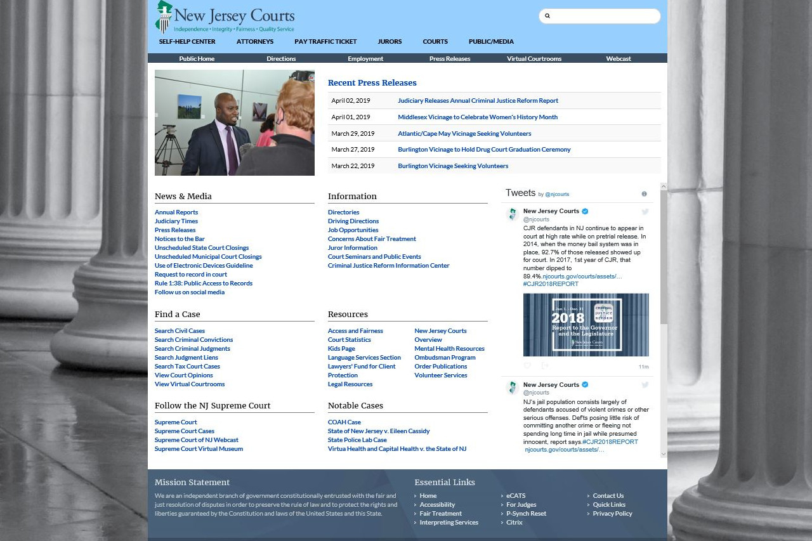

<div id="ajax-page" class="ajax-page-content">
        <div class="ajax-page-wrapper">
            <div class="ajax-page-nav">
                <div class="nav-item ajax-page-prev-next">
                    <a class="ajax-page-load" href="portfolio-4.html"><i class="zmdi zmdi-chevron-left"></i></a>
                    <a class="ajax-page-load" href="portfolio-6.html"><i class="zmdi zmdi-chevron-right"></i></a>
                </div>
                <div class="nav-item ajax-page-close-button">
                    <a id="ajax-page-close-button" href="#"><i class="zmdi zmdi-close"></i></a>
                </div>
            </div>
    
            <div class="ajax-page-title">
                <h1>Court Opinion File Mover</h1>
            </div>
    
            <div class="row">
                <div class="col-sm-7 col-md-7 portfolio-block">
                    <div class="owl-carousel portfolio-page-carousel">
                        <div class="item">
                            
                        </div>
                        <div class="item">
                            
                        </div>
                        <div class="item">
                            
                        </div>
                        
                        <div class="item">
                                
                            </div>
                    </div>
    
    
                    <!--
                    <div class="portfolio-page-image">
                        
                    </div>
                    -->
    
                    <script type="text/javascript">
                        jQuery(document).ready(function ($) {
    
                            $('.portfolio-page-carousel').owlCarousel({
                                smartSpeed: 1200,
                                items: 1,
                                loop: true,
                                dots: true,
                                nav: true,
                                navText: false,
                                margin: 10
                            });
    
                        });
                    </script>
                </div>
    
                <div class="col-sm-5 col-md-5 portfolio-block">
                    <!-- Project Description -->
                    <div class="block-title">
                        <h3>Description</h3>
                    </div>
                    <ul class="project-general-info">
                        <li>
                            <p><i class="fa fa-globe"></i> <a href="https://njcourts.gov/attorneys/opinions.html"
                                    target="_blank">https://njcourts.gov/attorneys/opinions.html
                                </a></p>
                        </li>
                    </ul>
                    <p class="text-justify">Developed a solution for a NJ Courts website to prep court Opinion content for NJ Courts website.

                    I created a python script that utilized the SCP (paramiko) library to SFTP onto the site's servers to gather JSON files which contained the site's Court Opinion information. The script would then parse the JSON files and begin prepping the Court Opinion content for the website.<br><br>

                    The Court Opinion's Meta Data would be added to the PDF, based on information gathered/parsed from the JSON file. The day's and the next day's expected Court Opinions data would then be added to the website's JSON file. The appropriate Court Opinions PDFs would also be SFTP'ed to the appropriate location (based on the parsed JSON data) on a different server for third party consumption. Furthermore, Court Opinion summary information would also be added to the site's JSON file for dynamic display on a separate page.<br><br>

                    The python script would be executed at a specific times per project specification and also generate an RSS feed in XML format. <br><br>
                        
                        
                    The python script was then bundled into an executable and utilized a service on a Windows 2012 server to manage the solution.</p>
                    
                    <!-- /Project Description -->
    
                    <!-- Technology -->
                    <div class="tags-block">
                        <div class="block-title">
                            <h3>Technology</h3>
                        </div>
                        <ul class="tags">
                                <li><a>Python</a></li>
                                <li><a>SFTP</a></li>
                                <li><a>Windows</a></li>
                                <li><a>NSSM</a></li>
                                <li><a>XML</a></li>
                                <li><a>JSON</a></li>
                            </ul>
                    </div>
                    <!-- /Technology -->
                </div>
            </div>
        </div>
    </div>